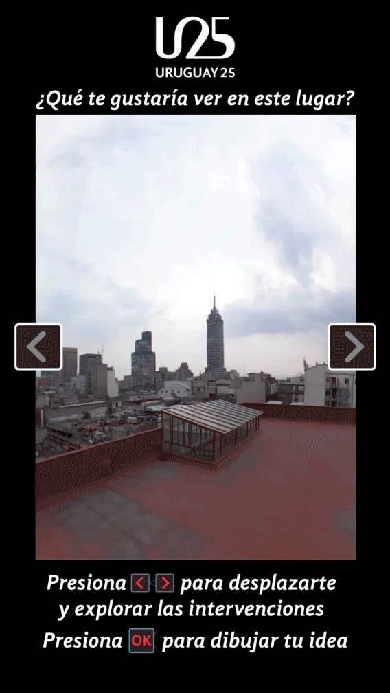
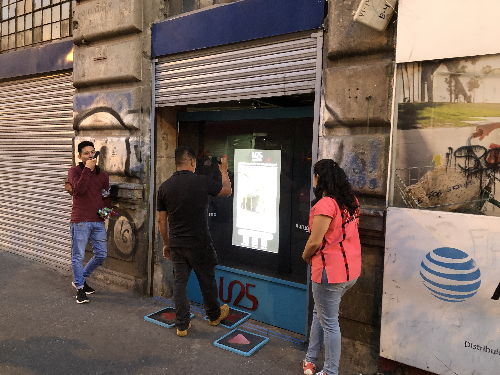
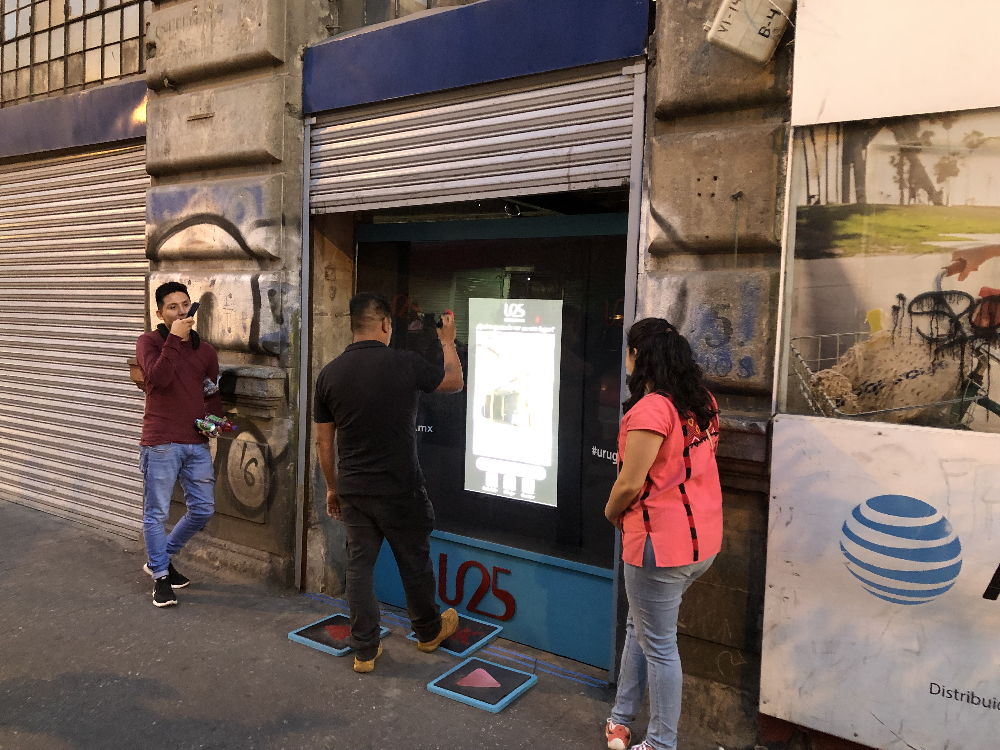
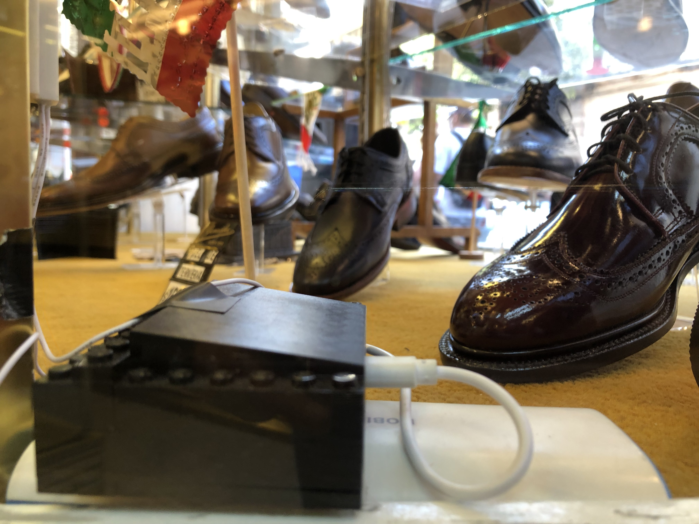
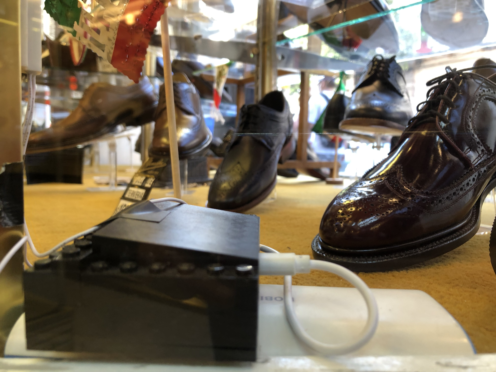

Uruguay 25: Technologie, appropriation et mémoire
Categoriés: IoT, Installation Interactive
Dates:2019
Site web: www.uruguay25.mx
GitHub: https://github.com/psotresc/Uruguay25-Interactivo2
Il s'agit d'un projet participatif qui a cherché à générer une appropriation symbolique par les commerçants et les passants avec le bâtiment situé au numéro 25 sur la Calle de República de Uruguay pour sa prochaine ouverture en tant que centre culturel, à travers une installation interactive générée en collaboration avec les locataires, pour que le public, en interagissant avec l'installation, donne de la visibilité au bâtiment et aux locaux. Le projet a été réalisé en collaboration avec Carlos Guerrero Millán, Cristina Rivas Herrera dans le cadre de la recherche terminale du Master en design, information et communication de l'Université autonome métropolitaine de l'unité Cuajimalpa. Il comprenait des recherches théorico-conceptuelles, la création d'une méthodologie interdisciplinaire et le développement d'un prototype haute fidélité, qui a été présenté au public le 31 août 2019 et le 6 septembre.
Langages de programmation
Python
C#
Javascript
PHP
C++
Software
Arduino
TD
Unity 3D
After Effects
illustrator
Photoshop
Afin de s'adapter à la vocation commerciale de la rue et dans le cadre de l'enquête, il a été décidé d'utiliser une vitrine qui montrerait trois interactifs selon les différents moments ou moments de la République d'Uruguay et se réfère également au passé, au présent et à l'avenir du bâtiment et de la rue.
Le premier interactif a été présenté de 9 h à 13 h et avait pour thème principal les souvenirs et les histoires sur le bâtiment et la rue et que les gens pouvaient découvrir à travers l'installation. Pour cela, il a été décidé de capturer la silhouette des personnes afin qu'elles puissent révéler les secrets du passé du bâtiment, afin que les gens réfléchissent sur le bâtiment. Pour cela, un Kinect V2 a été utilisé pour récupérer l'image de profondeur et la mélanger avec les images collectées.

Le deuxième interactif, a été exposé entre 13h00 et 17h00 et reflétait la dynamique commerciale et de divertissement qui rend le bloc différent des autres. Innovation, saveurs et tradition se rejoignent dans le jeu "Shopping en Uruguay", c'est un jeu qui réagit à la dynamique de la rue et pour cela, en collaboration avec les locataires, divers capteurs ont été placés dans leurs locaux, le Représentant la dynamique de leurs commerces et de la rue, ces capteurs ont envoyé des signaux qui sont devenus des icônes dans le jeu et que le joueur devait collecter pour gagner des points et pouvoir gagner des récompenses sur place. Nous avons travaillé avec un total de 4 entreprises utilisant des photorésistances, des capteurs de présence, des capteurs de vibration, des boutons et des capteurs magnétiques reed connectés aux modules Node MCU qui ont envoyé les signaux WIFI

Enfin, le troisième interactif qui a été présenté de 17 à 21 heures cherchait à montrer l'avenir et les possibilités du prochain Centre culturel et a permis au public de dessiner ce qu'il aimerait voir dans ce bâtiment à travers le mouvement de son corps et ainsi faire exploser l'appropriation de l'espace. Pour ce faire, il pourrait réaliser l'intervention numérique de photographies du bâtiment, pour l'interactif, une étude d'image à 360 degrés du bâtiment a été réalisée, que l'utilisateur pourrait explorer à l'aide de boutons et sélectionner un espace pour intervenir par le mouvement de son corps. Pour cela, le Kinect V2 a été utilisé pour suivre le poignet droit et l'utiliser pour dessiner.

Le projet général Uruguay 25 Art, Sciences, Humanités et Citoyenneté, est en phase de développement et de planification en charge de la Coordination Générale de Diffusion de l'UAM. Le projet de recherche des étudiants MADIC du bâtiment a été réalisé avec le soutien de la Direction Académique et Culturelle de cette Coordination.
Plus d'informations sur le site:
http://uruguay25.mx 

 
